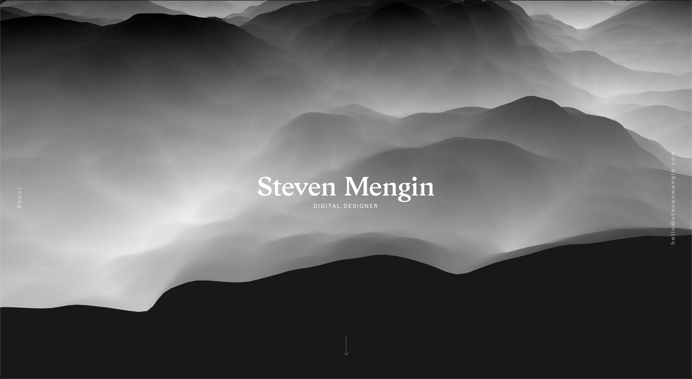
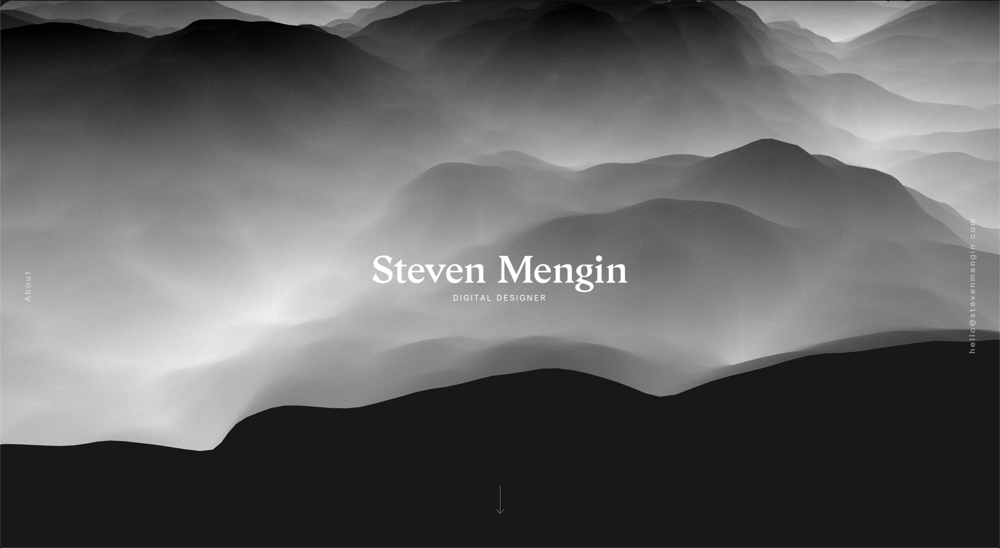

Client
Personal Project
Role
Brand, UI/ UX, Dev
Date
2018
And we begin
In the 21st Century, your image, whether it be over Instagram, Linkedin or your personal site, is one of the largest influencers as to how family, friends and employers alike assess your character. In today’s world, I believe how you tell your story is more important than ever before. And when it came time to design my portfolio I realized I had an opportunity here that far exceeded merely showcasing my work.
Welcome to the Design of Self.
Research and Inspiration
Seeking other UX Design portfolios as inspiration, the ones that spoke to me held a treasure trove of captivating work and told a story that left the visitor wanting more. I began to analyze what factors made their sites so compelling and compiled a list of key insights that I would utilize as I developed my own brand and story.
 

My Approach
Knowing that there is a never-ending trench of UX portfolios that hiring managers must sift through I wanted to impress them the moment they landed on my site so they would be compelled to dive deeper. The key insights became my design principles and strategic backbone when I began to create the form and function of my site.
Key Insights
Key insights were made by asking myself questions such as, “What makes want to read their entire case study instead of just skimming through and looking at the pretty UI?” or “What visual elements are being used that are creating this sense of excitement and joy for me as a visitor?”
Wireframes
Utilizing my Key Insights, I moved into the initial sketches for my site aiming to keeping things as simple as possible.
Branding
Branding was by far the most exhausting, but rewarding, stage in designing my site. Before even touching the logo, moodboard, or color palette, I spent a few days going through an intense internal discovery process to learn what really drives me, what makes me feel alive, what are the characteristics that truly represent me and if Menachem could be the Menachem he always dreamed of, what would he be like?

Hi-Fi Mockup
Applying the branding to my site was like breathing a lungful of fresh, cold air. I felt alive. I felt like I was looking at ... me, but digitally, as a portfolio (I’m gonna stop here before it gets any weirder ;P). It went through many, many iterations until I felt that it was a true representation of my vision. Form. Function. The whole 9 yards.

Iterations
Once I had an “MVP”, I reached out to a few different UX hiring managers, professionals and mentors to get feedback on my site. They’re insight was truly indispensable and fueled even greater amounts of growth as it forced me to go back to the drawing board and push myself even further.
Development
Wanting my portfolio to truly be a complete expression of me, I decided to code the entire thing from start to finish. To streamline development and enable the site to be responsive I taught myself CSS Grid and FlexBox. Coding my site led to greater self-discovery as it proved to me that I thrive when I am expressing my creativity, no matter the medium, whether it be designing, coding, making music, or any one of my various creative pursuits.
Final Prototype
You’re looking at it ;)
Conclusion
I’ve always wanted to brand myself. To see my vision of myself expressed visually. The process of strategizing, designing, and developing my personal site was one of the most enjoyable and fulfilling experiences I’ve ever had, proving to myself that I am capable of capturing my vision and building it from the ground up. To the future.
Cheers!